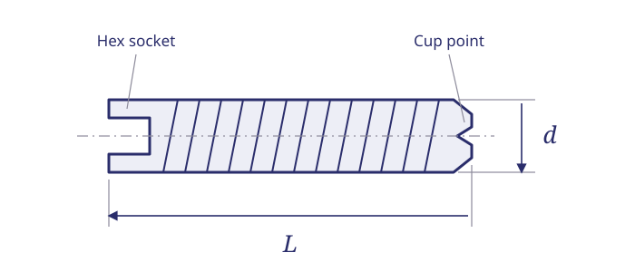

// TECHNICAL RESOURCES
MS51021 stainless cup-point set screws.
Identify MS51021 hex-socket set screws, compare selected plain dash-number sizes and send Webson the complete part number for pricing, availability and required documentation.
// DIMENSIONS & PART IDENTIFICATION
Set-screw length, thread diameter and cup point

Schematic only; not to scale. Letter labels are keys for this illustration. Use the applicable part specification for dimensions, tolerances and measurement conventions.
// PART IDENTIFICATION
Identify the series before the size
MS51021 identifies headless, hexagon-socket, cup-point set screws in corrosion-resisting steel with UNC-3A threads. The historical drawing specifies 300-series stainless steel and a passivated finish. The socket is at one end; the recessed cup point is at the other.
Confirm the point style, thread and locking configuration on the drawing. A commercial stainless set screw of similar dimensions is not, by that description alone, a verified substitute.
// SIZE LOOKUP
Selected MS51021 part numbers
Use these four selected plain configurations to identify a requirement and start a quote. Dimensions are nominal and in inches. Thread entries show diameter and pitch; the series thread class is UNC-3A.
No matching entries. Clear the filters or try a shorter search.
| Part number | Thread size | Length (in) | Length, decimal (in) | Stock status | Request pricing |
|---|---|---|---|---|---|
| MS51021-9 | 4-40 | 1/8 | 0.125 | Stocked item | Quote MS51021-9 → |
| MS51021-10 | 4-40 | 3/16 | 0.1875 | Stocked item | Quote MS51021-10 → |
| MS51021-11 | 4-40 | 1/4 | 0.250 | Stocked item | Quote MS51021-11 → |
| MS51021-21 | 6-32 | 1/8 | 0.125 | Stocked item | Quote MS51021-21 → |
Stocked items are subject to prior sale. Request a quote to confirm current availability and lead time.
This is a selected-size reference, not the complete series or an inspection drawing. Availability, lead time and certification requirements are confirmed with your quote.
// PART-NUMBER EXAMPLE
How to read MS51021-9
MS51021 identifies the series; the dash number selects a defined configuration. In the selected table, dash 9 identifies a plain 4-40 screw with a nominal 1/8-inch length. Dash 10 and dash 11 retain the 4-40 thread and select different lengths; dash 21 selects 6-32 at 1/8 inch.
The dash number is a table lookup, not a length code to multiply by a fixed increment. Keep the complete designation when ordering.
// LOCKING REQUIREMENTS
Plain and self-locking configurations
The standard covers both plain and self-locking configurations. The four entries above are plain selections; do not interpret them as patched or self-locking parts.
If your drawing calls for a locking element, coating or additional suffix, include that complete callout with the inquiry. A locking feature added to a plain part requires review against the applicable drawing and order requirements.
// FAMILY COMPARISON
Compare related set-screw series
| Item | Reference |
|---|---|
| MS51021 | Stainless cup point, UNC; this guide |
| MS51023 | Stainless cup point, UNF |
| MS51031 | Stainless flat point, UNF |
| MS51047 | Stainless half-dog point |
| MS51963 | Alloy steel cup point, UNC |
These series are shown for identification, not as approved alternates. Matching diameter and length does not resolve a change in thread pitch, point geometry, material or finish.
// STANDARD STATUS
MS51021 and NASM51021
The legacy MS51021 document was canceled on September 30, 1999 and names NASM51021 as its successor. NASM51021 is listed as an active adopted standard in the document-status review checked October 22, 2026.
Send the part designation and revision required by your drawing. A successor standard name does not, by itself, authorize changing the ordering number or substituting a different configuration.
// SOURCE WITH WEBSON
Get a quote from Webson
Use a part-specific quote link above, or send Webson a complete bill of material. Include quantity, required delivery date, specification revision, any locking or finish requirements, and the certificates or lot traceability your order requires.
Webson Fasteners is an AS9120B and ISO 9001 certified distributor. Our team can review selected MS51021 parts and other sizes for quotation.
// BUYER CHECKLIST
Prepare the requirement for quotation
- Complete designation, including all material, finish and locking suffixes.
- Quantity, required delivery date and controlling drawing or specification issue.
- Required certificates, source restrictions and lot traceability.
// SOURCE WITH WEBSON
Have a part number or bill of material?
Send the complete designation, quantity, required delivery date and documentation requirements. Webson will review your requirement for quotation.